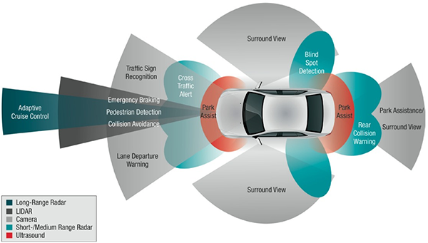
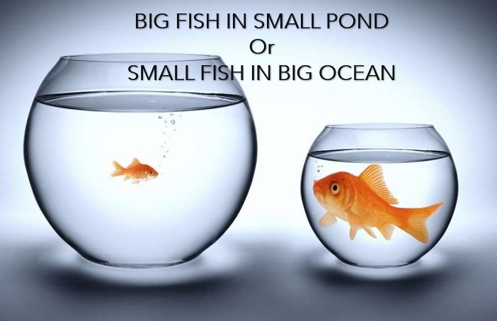
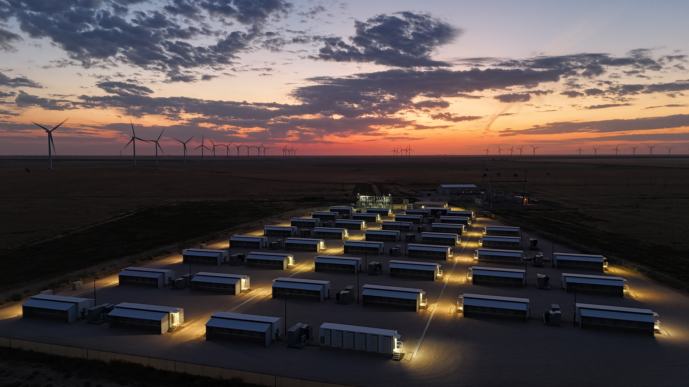
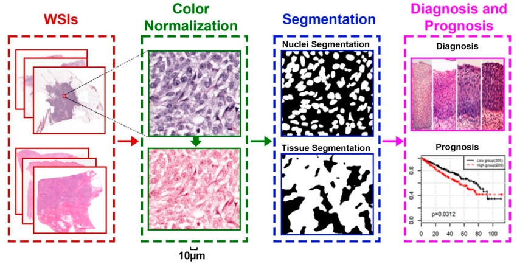

प्रेरणा सेतू - August 2025
Dhanannjay "Djay" Deo (धनंजय देव)
Arctic code vault contributor
- Some of my open source software is protected in vault
- Under arctic ice
- On film
- Secured for thousands of years


Where to find more information
dhandeo@gmail.com
https://github.com/dhandeo
https://www.linkedin.com/in/dhandeo
https://twitter.com/dhandeo
Simulation of hydrodynamics of bubble column reactors
NVIDIA
Obstacle detection for active safety and self driving





Doctor of Philosophy (Mechanical engineering)
Rensselaer Polytechnic Institute, Troy, NY, 2005-10
Computational mathematics, Computational mechanics, (linear and nonlinear) finite element method, Software design
Simulation based training

For laparoscopic surgery
Master of Science (faculty of engineering)
Indian Institute of Science, Bangalore, India, 2003-6
Product design, mechanism design, geometric modeling, CAD
Mesh processing for computerized facial anthropometry

Notable projects at Kitware Inc 
Kitware is technical software company specializing in R and D in the domains of medical imaging, computer vision and scientific visualization
Kitware GENIE
General Engine for Indexing Events
Content based video classification and search
Interactive evaluation of machine learning system
Demo again ?
full stack web, python, javascript, celery, MongoDB, sqlite3
"IARPA Program manager included this demo in her deck"
Disclaimer: my words but not my voice
Digital SlideAtlas

Image Understanding

Thank you !